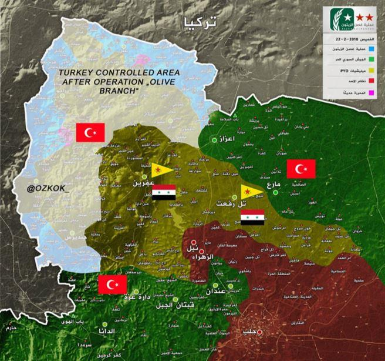
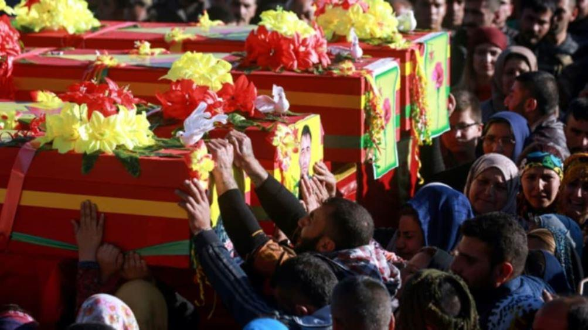
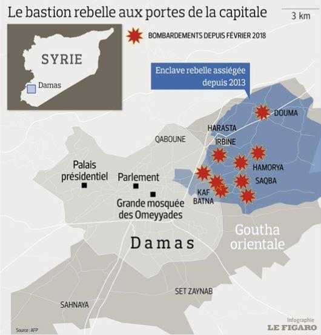
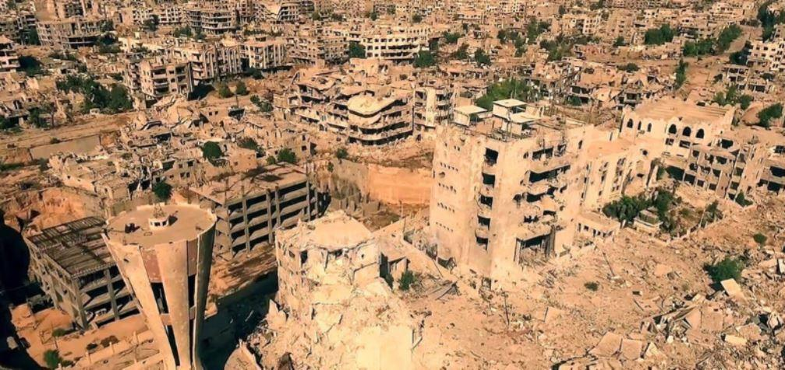

Il se déroule actuellement en Syrie -précisément à Al-Ghouta- un des plus rudes combats jamais eu pendant les sept ans de guerre entre l’armée syrienne et différents groupes de combattants syriens ou étrangers. La région d’Al-Ghouta a été classée par les accords d’Astana sur la liste des régions de désescalade en Syrie, de même que six autres régions1.
Les combattants d’Al-Ghouta n’ont jamais vraiment respecté les décisions prises à Astana. Cependant, des négociations étaient en cours entre l’Etat syrien et les différentes organisations dans la zone citée, afin de tenter de trouver une solution moins coûteuse. Il convient de préciser que les Etats-Unis et l’Europe ont fait le choix de ne pas être présents à Astana. Hélas, nous connaissons les collusions entre certaines organisations et groupuscules armés d’Al-Ghouta et certains pays occidentaux2, chose qui n’est plus secrète depuis un certain temps3.
La Turquie est la seule actuellement à manœuvrer aisément en Syrie. Toutefois, cela est-il durable ? Y a-t-il une coïncidence que la bataille d'Al-Ghouta ait lieu au moment où l’armée syrienne arrive aux frontières administratives de la région d'Idlib4 ? Chose étrange, puisque c’est justement à Idlib que de multiples groupuscules armés ont été rapatriés suite à leur sortie des diverses régions syriennes, notamment des membres de l’organisation Al-Nosra.
S’agit-il vraiment d’une coïncidence que la bataille d'Al-Ghouta commence en parallèle des opérations de l’armée turque nommées « Rameau d’olivier », en l’occurrence au nord de la Syrie dans la région d’Afrine5 ? Il convient de préciser que le rameau d’olivier signifie, dans l’imaginaire collectif oriental, un signe d’apaisement et de paix, tandis que dans les opérations turques il y a des morts qui tombent tous les jours des deux côtés de la frontière syro-turque6.
Est-il nécessaire de préciser que ce qui se passe à Afrine a été occulté par l’actualité européenne ? … Tous les regards se sont de fait tournés vers Al-Ghouta.
Les civils qui tombent quotidiennement à Damas en raison des bombardements sauvages et anarchiques des combattants d’Al-Ghouta sur la ville, sont aussi absents de l’actualité européenne ou à peine mentionnés. Ceci ne signifie pas qu’il n’y a pas de morts parmi les civils d’Al-Ghouta, mais cela demeure exagéré dans la bouche des médias de masses. 7
Le scénario de la bataille d'Alep se répète à l’identique à tous les niveaux. Les combattants d’Al-Ghouta bombardent les couloirs humanitaires. Néanmoins et fort heureusement, des civils parviennent avec l’aide de l’armée et de ses alliés à sortir des zones de combats.8

La situation d’Al-Ghouta vue par Le Figaro… (ndlr : Pas de bombardements sur Damas.)

Damas bombardée
Les informations sur le terrain affirment que l’armée syrienne aurait déjà repris 80 % du territoire d'Al-Ghouta. L’armée a coupé Al-Ghouta en deux voire en trois zones. Les grandes villes comme Douma sont entièrement encerclées et la ville de Jisreen, stratégiquement importante, est entièrement libérée tout comme le sont les villages de Sakba et Kfar-Batna. Quant à Douma, elle occupe une situation exceptionnelle : elle exige un accord à part, afin que soient libérés les prisonniers et les otages détenus dans les prisons de Jaych Al-Islam. Que peut signifier l’avancée relativement rapide de l’armée syrienne dans la région d’Al-Ghouta ? Face au retrait russe de la région d’Afrine avant le début des opérations turques, le but serait-il de déloger les terroristes, libérer la zone et sécuriser Damas, et se pourrait-il qu’il y ait un quelconque accord tacite tel que l’échange d’Al-Ghouta contre Afrine ? Si une telle hypothèse se confirme, il est certain que la Turquie est tombée dans un piège et pourrait s’enliser dans une guerre très coûteuse, similaire à celle que connaît l’Arabie Saoudite au Yémen.
En revanche, les victoires successives de l’armée syrienne à Al-Ghouta peuvent rapidement s’envoler si les Etats-Unis demeurent toujours décidés à frapper Damas9. De plus, les changements qu’a récemment effectués le président américain Donald Trump, dans son administration et dans son entourage, ne permettent pas d’envisager sereinement les choses.
Pourvu que les États-Unis n'interviennent pas directement à Al-Ghouta. Ni Israël d’ailleurs, surtout au vu de la destruction de son avion de combat F16 le 13 février 2018 par l’armée syrienne, ce qui symboliquement en dit beaucoup. Mais le durcissement américain à partir des récentes positions et déclarations au sujet de la Syrie et de ses alliés -tout comme les remaniements au sein de l’administration américaine et dans l’entourage du président Trump- garantie-t-il une victoire américaine en Syrie en cas de guerre directe10 ?
Les opérations à Afrine et à Al-Ghouta vont mettre terroristes, combattants syriens et kurdes devant un fait accompli. Pour les premiers, la bataille est entièrement perdue. Il leur reste quelques semaines de nuisance, à l’instar de ce qui s’est passé à Alep avant l’effondrement final et leur sortie vers la région d’Idlib. En ce qui concerne les Kurdes, cela pourrait se traduire par leur retour sous l’égide de l’État, avec lequel les canaux de négociations ont été ouverts depuis un bon moment.
Certains observateurs affirment que des forces populaires syriennes, affiliées à l’armée régulière, sont entrées dans la région d’Afrine afin d'épauler les Kurdes face à l’armée turque. Toutefois, les forces populaires syriennes alliées de l’armée syrienne ne sont pas l’armée syrienne. Ce qui pourrait signifier que les Kurdes demeurent hostiles à une présence officielle de l’État. Ceci a également été constaté dans la reprise par l’armée turque de la ville d’Afrine, chassant les Kurdes de cette zone, tandis qu’il suffisait de laisser entrer l’armée syrienne pour stopper l’offensive turque11.
Après la bataille d’Al-Ghouta, ce ne sera plus comme avant. Les dimensions stratégiques semblent se modifier au profit de la Syrie et de ses alliés. Une éventuelle attaque américaine contre Damas peut faire basculer les choses vers une guerre régionale. La précaution demeure le mot d’ordre…
A.C.
Notes :
1 Accord à Astana sur une quatrième « zone de désescalade » en Syrie : https://www.challenges.fr/monde/accord-a-astana-sur-une-quatrieme-zone-de-desescalade-en-syrie_499756
2 Syrie: Erdogan accuse l'Occident de soutenir Daech :
5 Opération « Rameau d'olivier » : combats meurtriers entre forces turques et combattants kurdes : https://www.lorientlejour.com/article/1095563/pour-le-troisieme-jour-lartillerie-turque-pilonne-afrine.html
6 Le rameau d’olivier symbole de paix et de réconciliation, il a été choisi par Dieu pour signifier à Noé que le Déluge fut fini et que la décrue pût commencer, symbole du pardon. L'olivier était un cadeau chargé d'une signification gratifiante lors des jeux olympiques à Athènes. Couronne d'olivier et jarres d'huile d'olive étaient ainsi offertes aux vainqueurs. L'olivier est réputé pour son bois très compact, très lourd et très dur. C'est en bois d'olivier que furent faites les massues d'Hercule et c'est avec un pieu en bois d'olivier qu'Ulysse terrassa le Cyclope dans l'Odyssée.
7 « Damas visée par un bombardement, cinq morts et plus de 32 blessés », 16.11.2017, https://sptnkne.ws/hbCK
8 « Des civils qui tentaient de fuir la Ghouta tués par des rebelles djihadistes », 1 mars 2018,
9 « Pourquoi les USA veulent frapper Damas? », Mar 21, 2018, http://parstoday.com/fr/news/middle_east-i59702-pourquoi_les_usa_veulent_frapper_damas
10 C’est dans ce cadre que nous pourrons placer le fameux discours du président russe Vladimir Poutine, le ….
11 « Un accord entre Damas et les Kurdes pour contrer l'offensive turque à Afrin aurait échoué », 16 févr. 2018, https://francais.rt.com/international/48119-accord-entre-damas-kurdes-aurait-echoue
Partager cette page